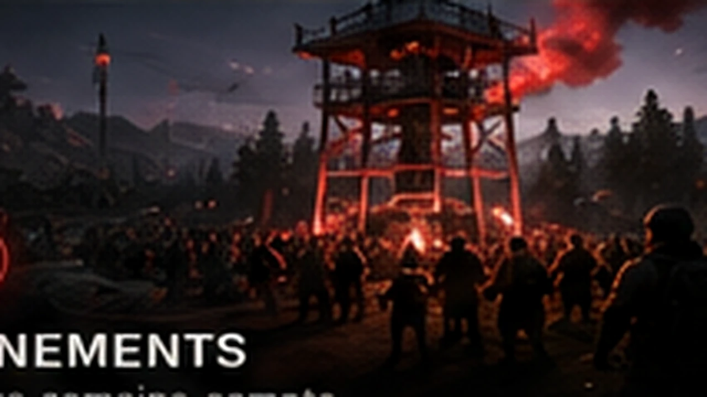

SENZANY // ACCÈS AU SERVEUR
REJOIGNEZ
L'AVENTURE.
Chernarus vous attend. Quelques minutes suffisent pour installer les mods, rejoindre le serveur et commencer votre histoire.
COMMENT NOUS REJOINDRE
4 ÉTAPES.
ET VOUS Y ÊTES.
Pas de procédure compliquée. Le launcher officiel DayZ gère automatiquement les mods nécessaires.
CHERCHEZ SENZANY
Ouvrez les serveurs communautaires et recherchez simplement « Senzany ».
LAISSEZ STEAM FAIRE
Choisissez « Configurer les DLC et mods puis rejoindre ». Le téléchargement est automatique.
AUTOMATIQUE ✓BIENVENUE CHEZ VOUS
Ajoutez le serveur aux favoris, entrez sur Chernarus et commencez votre récit.
REJOINDRE ↗UNE FOIS CONNECTÉ
LE SERVEUR N'EST QUE
LE POINT DE DÉPART.
Construisez, explorez, commercez, participez aux événements et faites évoluer votre survivant dans un monde pensé pour durer.
DÉCOUVRIR SENZANY
TROIS FAÇONS
DE VIVRE LE MONDE.

LE MONDE BOUGE.
Courses, boss, convois, défis et opérations communautaires.
CHERNARUS CHANGE.
Des zones retravaillées, des lieux uniques et des secrets à découvrir.

VOTRE HISTOIRE RESTE.
Votes, économie, récompenses et progression reliés à votre profil.
PRÊT ?
CHERNARUS
VOUS ATTEND.
Vous savez maintenant comment entrer. Il ne reste plus qu'à écrire la suite.